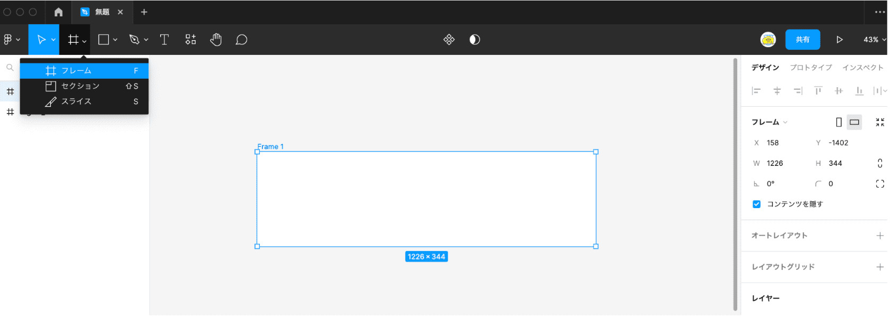

Figmaの用語
はじめにFigmaの用語を確認しましょう
Figmaを使用する上で、最低限押さえておくべき用語を記載します。使用しながら少しずつ覚えていきましょう☆
Figmaのオブジェクトで最も使用するのは「 フレーム」です。
デザインの描画範囲を決めるものであり、プロトタイプツール（画面遷移）の遷移先、レイアウトの調整のための親オブジェクトの役割と・・「フレーム」にはたくさん役割があって万能なんだなと覚えておいてください。

⬇︎
＼基本的な用語／
| 用語 | 内容 |
|---|---|
| オブジェクト | 要素（物体）。ここではフレームや図形・線・パーツ |
| フレーム | デザインの描画範囲。親オブジェクト |
| セクション | オブジェクトのグルーピング機能。キャンバスの整理が目的 |
| オートレイヤー | オブジェクトのレイアウト調整を行うこと |
| 制約（コンストレイン） | フレーム(外枠)のサイズが変わったときに、中のオブジェクトがどのように振る舞うかを決めるもの（左寄せで固定、右寄せで固定等） |
| インスタンス | コンポーネントから派生したオブジェクト |
| プラグイン | 便利なサービスをFigma上で行える拡張機能 |
| プロトタイプ | 画面遷移やボタンアクション等を、実際に作成したデザインで再現できる機能 |
| マスク | オブジェクトの特定の領域を表示しながら残りの領域を隠す |
| エフェクト | オブジェクトに影やぼかしを加える |
| カラースタイル | 色を管理する |
| テキストスタイル | テキストを管理する |
Figmaのショートカットキー
Figmaでは便利なショートカットキーがあります。ツールの切り替え系ショートカットキーは押さえておきましょう。ここではよく使用するショートカットキーを紹介します☆
＼ツールの着り替え／
| ショートカット | キー | 説明 |
|---|---|---|
| 移動ツール | V | オブジェクトの選択移動する際に使用 |
| フレームツール | F | フレームの作成 |
| テキストツール | T | テキストを入力する |
| 長方形ツール | R | 長方形を作成する。Shiftを押しながら設置すると正方形が描ける |
| 楕円ツール | O | 円を作成する。Shiftを押しながら設置すると正円が描ける |
| 線ツール | L | 線を作成する |
| コメントツール | C | コメントを残せる |
＼よく使用する便利系／
| ショートカット | キー | 説明 |
|---|---|---|
| 画像の編集モード | Enter | ベクトル編集。頂点の編集が可能 |
| コンポーネント化 | ⌘/option/K | 繰り返し使用するデザインをテンプレート化 |
| 選択範囲のフレーム化 | ⌘/option/G | 選択範囲をフレーム化する |
| 画像の挿入 | ⌘/option/K | 画像モーダルの表示 |
| レイヤーパネルを全て閉じる | option/L | 開いている、階層のレイヤーパネルを全て閉じる |
| レイアウトグリッドの表示 | option/G | レイアウトグリッドの表示・非表示 |
| 対象レイヤーの選択 | ⌘/クリック | レイヤーが複数重なっているなかでフォーカスしているレイヤーに飛んでくれる |
| 同じ要素をコピー | option/shift/ドラッグ | 同じ要素をコピーしてドラッグしたところに設置する |
| 色の抽出（スポイト） | I | 色のスポイト機能 |